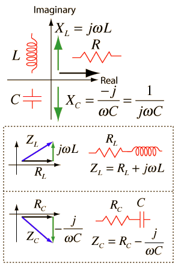

|

|
Using complex impedance is an important technique for handling multi-component AC circuits. If a complex plane is used with resistance along the real axis then the reactances of the capacitor and inductor are treated as imaginary numbers. For
series combinations of components such as
RL and RC combinations, the component values
are added as if they were components of a vector. Shown here is the cartesian form of the complex impedance. They can also be written in polar form.
Impedances in this form can be used as building blocks for calculating the impedances of combination circuits like the RLC parallel circuit.
|